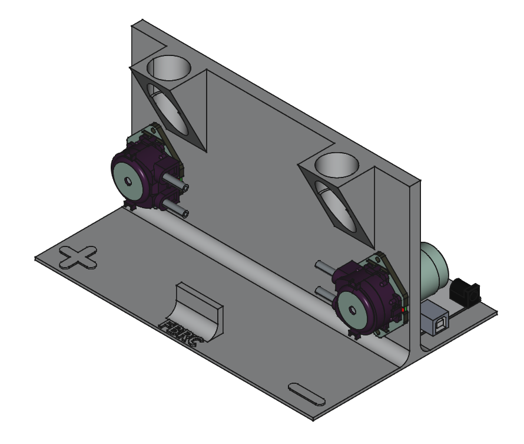

Preparing the pumps and power electronics

- Electronics breadboarding
- Flashing firmware to an Arduino
Parts
- 1 24 V DC power source
- 1 Arduino UNO R3 - or equivalent microcontroller that can output two independent 5V PWM signals and connect to PC over USB serial
- 1 jig
- several male-to-male breadboard jumper cables
- 2 peristaltic pumps with correct tubing
- 1 USB A-to-B cable
Tools
- 1 PC - Must be able to flash firmware to microcontroller and connect over USB serial to microcontroller and potentiostat
- 1 potentiostat - preferably the MYSTAT
System overview
A PC communicates with both a charging/discharging device (typically a potentiostat) as well as an Arduino UNO R3. These documents assume the use of a MYSTAT potentiostat and it's modified control software.
The Arduino is connected to two peristaltic pumps which have internal stepper motor drivers, and are powered by a 24 V DC power source. To know the flowrate (in mL/min) of the peristaltic pumps, a separate measurement is required (like dispensing water into a graduated cylinder).
We use the open-source MYSTAT (with our own modifications to the control software), but any equivalent potentiostat or battery cycler will do. Our pump control system is based on the MYSTAT software, though, and can be used without the MYSTAT present.
With this hardware configuration, the MYSTAT software then allows for entire control of this electrochemical system: the applied currents and voltages as well as the speeds of the electrolyte pumps.
Step 1: Flash firmware to microcontroller
Using the Arduino IDE with the elapsedMillis library installed, upload the following code to the Arduino. The location of the code in the repository is here
Step 2: Add Arduino to the jig
There are standoffs made for the for the Arduino and motor driver on the back of the jig .
Step 3: Add pumps to jig
Insert the two peristaltic pumps with correct tubing into their holders in the as shown:

Step 4: Connect cables between Arduino, motors, and power supply
Using male-to-male breadboard jumper cables connect according to the below diagram, taking care to connect the negative terminal of the 24 V power supply lead to both the GND terminal of the motor driver (middle connection of the three-terminal screw connection header) and a GND pin of the Arduino, so that the Arduino's signals to the motor driver are in relation to the same fixed GND.
Here is a proper schematic:
The wiring should look like this when you're done (feel free to make it tidier!)

You now have a jig with pumps and power electronics.
Connect microcontroller to PC and test pumps.
We are using the MYSTAT potentiostat and have modified the software to be able to control the pump speeds. If you have a different potentiostat, you can still use the MYSTAT software to control your pumps without having a MYSTAT connected.
Plug in the 24V power source to the H-bridge. Connect the Arduino to the PC with a USB A-to-B cable
Run the MYSTAT modified control software.
Connect to the Arduino through the MYSTAT GUI. Briefly test each pump to make sure it spins (it can spin for a couple seconds dry without issues).